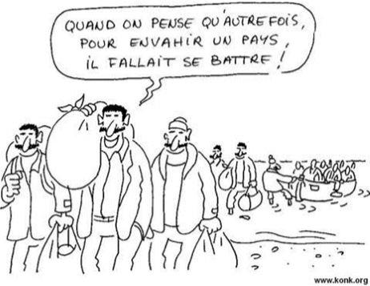
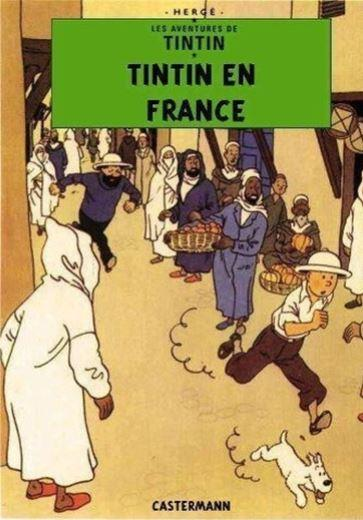

Nous sommes dans l’avion d’une grande compagnie aérienne, qui revient de l’escale de Kaboul, avant de débarquer ses passagers sur un grand aéroport international à peu de distance de là.
Une fois le décollage réalisé, passées les montagnes et les risques de tirs missiles, nous nous établissons en croisière. Observons maintenant nos passagers : deux ou trois officiels style ONU en première classe, puis le contingent habituel de tatoués barbus en chaussures de trekking, la casquette de base-ball visée sur les yeux…. guerriers d’opérette, gardiens d’ambassades aux check-points multiples, surveillants de clôtures ou de caméras, pourvus d’armes automatiques qu’ils n’utiliseront jamais pour crapahuter dans la montagne vus qu’ils passeront des semaines dans un compound sécurisé, sortant éventuellement en convois de 4x4 Dodge ou Chevrolet – et malheur à l’indigène qui doublera d’un peu trop près, la bienveillante Amérique assurant à ses sbires l’impunité et l’extraction dans tous les cas de bavures.
Tatouages de rigueur, à donner envie de s’en faire faire pour avoir soi-même l’air d’un guerrier. Muscles surgonflés, selon l’usage de leur pays gavé au chimique, avec les heures passées enfermés qu’il faut bien occuper…. Petit rappel : ces gens ont passé à peu près trois ans dans des unités de combat, sortis caporaux-chefs ils ont signé dans des boîtes privées, gagnant désormais en un jour ce qu’ils faisaient à peine en une semaine – et peuvent désormais envoyer promener les officiers à qui ils devaient respect quand ils étaient sous les drapeaux…. tout en bénéficiant de week-ends réguliers à Dubaï pour évacuer le trop-plein d’énergie et profiter des multiples attraits du lieu. Et tant qu’à faire, habiter à Bangkok ou Manille, villes aux multiples séductions bien connues.
Passons maintenant au reste des occupants de l’avion, qui constituent quand même la majorité : à première vue une population homogène assez typée, d’hommes au regard de braise (quoique souvent dévié, cloisonnement des vallées oblige) en tenue de jardinage et au bonnet tarte en feutre …. et de femmes, généralement de moins de vingt ans, l’air abattu voire battues, encombrées de paquets d’enfants, un peu plus d’un par année passée au-delà de quatorze ans. Jusque-là, rien d’inhabituel sur ces destinations… ah si, quand même, un invraisemblable grouillement d’enfants cette fois : disons une cinquantaine pour l’avion, une jeune femme seule n’en convoyant pas moins de neuf.
Mais que se passe-t-il donc ? une petite discussion avec le personnel de cabine nous en donne la clef assez vite : nous sommes début septembre, et c’est tout simplement la rentrée des classes … mais où donc, pour qui ? et cette fois, c’est le manifeste des passagers dont la lecture va se révéler aussi passionnante d’une étude de l’INED : figurez-vous donc que tout ce beau monde retourne sur l’Allemagne, l’Angleterre, les Pays-Bas et la Suède, ce que confirment les passeports apparents à l’entrée (eh oui, on vous demande bien la carte d’embarquement à la porte de tous les avions du monde, mais les gens conservent à la main le passeport qu’ils ont montré au comptoir lors du dernier contrôle… )
Des hôtesses des pays concernés me feront part de leur énervement, au sujet d’une situation déjà source de polémiques en Europe : accueillis comme réfugiés fuyant la guerre, bénéficiant des aides multiples que vous savez, rien ne leur interdit de retourner dès qu’ils le peuvent au pays, c’est quand même plus sympathique de passer ses vacances chez soi, n’est-ce –pas ?
On en profitera pour ramener un ou deux chérubins au titre de la famille élargie, les tests ADN étant considérés stigmatisants par des gouvernements aux ordres des associations qu’ils subventionnent. Certains de ces misérables finiront sans doute esclaves domestiques, mais ce n’est pas un souci pour la bien-pensance….
Les Anglais il y a une dizaine d’années se préoccupaient aussi de ce que certains adultes profitaient manifestement de ces mois de congé pour aller rejoindre les rebelles qui attaquaient les troupes de sa Majesté dans les montagnes, avant de reprendre l’avion pour le confort des épiceries de Birmingham… mais maintenant que les forces britanniques se sont retirées de la région, ce souci a disparu – et puis on est passé en Europe à d’autres menaces, n’est-ce-pas ?
Doit-on rappeler ici que depuis l’aube de l’humanité, fuyaient la guerre femmes, enfants et vieilles personnes, dans la mesure où ils arrivaient à se déplacer … or moi je dis que si vous êtes un jeune homme et que vous n’aimez pas les Talibans, vous rejoignez l’armée gouvernementale – et dans le cas contraire, ce seront les Talibans qui vous accueilleront. Pareil en Syrie ou en Irak - toute autre option fait de vous un lâche ou un déserteur, quelqu’un qui attend dans le confort de l’étranger « que la guerre finisse » - en clair, que vos compatriotes (ou d’autres !) aient fini de se faire tuer pour apporter la paix d’une façon ou d’une autre. Le Chili fut ainsi peuplé de milliers d’émigrés français qui avaient fui la conscription et les tranchées de la Première Guerre Mondiale, comme le découvrirent les officiers de la « Jeanne d’Arc » dans les années vingt, étonnés de ne pas voir se manifester la communauté française de l’escale de Valparaiso. Cette évidence ne semble pas effleurer tous ceux qui ouvrent les portes de l’Europe à ceux qui, encore une fois, « fuient la guerre »…
Un très fort contingent (près de cent cinquante) de ces personnes est en correspondance pour Los Angeles … pied de nez du gouvernement de cet état au Président Trump ? besoin des Américains de se faire pardonner leurs années de guerre ? immigration ancienne qui se nourrit désormais d’elle-même en aspirant tous les membres de la famille, qui à leur tour… ?
D’une façon plus générale, ce sont les compagnies aériennes qui sont les vecteurs de ces nouvelles grandes invasions : pour s’en persuader, il suffit lors d’autres vols vers l’Australie d’observer les groupes compacts de "subsahariens" (c’est comme à qu’il faut parler désormais) qui embarquent l’air un peu perdu, ou alors de ces Syriens ou Kurdes "évacués" (sur quels critères ?) qui ne divisent jamais leur groupe (amusant quand l’ascenseur de l’aéroport n’a que 15 places, et qu’ils sont plus de 20…) Ensuite on se promènera dans Melbourne par exemple, pour y voir dans une cour une soixantaine de jeunes africains se faire briefer - mon expérience me fait aussitôt reconnaitre la Corne de l’Afrique, les plus charmants comme vous le savez (spécialistes des colliers biologiques et de la couture familiale, je ne fais que suggérer, renseignez-vous) – et là à l’entrée de la cour, oh surprise, vu de mes yeux vu, une belle plaque en cuivre « Francs-Maçons de Nouvelles-Galles du Sud »…. Voilà, vous avez tout compris j’espère.
Tous ces braves gens sont aidés dans leur tourisme par des consulats complices, à la politique de visa généreuse (il parait qu’il y a des quotas, quelle que soit la politique du gouvernement du moment) donc certains arrivent à échapper aux embarcations de Méditerranée qu’on allège en jetant les femmes par-dessus bord (lu dans Libération il y a six-sept ans, au fond d’un grand article mal relu où un Tunisien racontait son petit exode) Grâce au personnel de ces consulats régulièrement condamné pour trafic de visa, à la surreprésentation d’employés issus de l’enrichissement, et au militantisme certain (je les fréquente !) c’est un flot continu qui embarque dans les avions long-courriers – et ne cherchez même à savoir qui paye les billets. Une dame ukrainienne de ma connaissance se rend à son Consulat et y voit la salle d’attente remplie à craquer de… enfin bon. Elle demande ce qui se passe, les anciennes colonies ukrainiennes d’Afrique envers qui il faudrait se repentir ? non, pas du tout, juste les consignes de l’Europe « si vous voulez faire partie du club, il faut nous aider à en faire venir… »
Et voilà ce que j’ai pu voir ces dernières années de part et d’autre dans le monde. Il y a incontestablement un plan démoniaque de transfert de populations (oui, le grand remplacement) mis en œuvre et planifié au plus haut niveau, et je voulais vous en parler. Le plus tragique est que ceux qui le mettent en œuvre et en font la promotion chez nous, sacrifient leurs enfants à leur propre idéologie, tel le Moloch du bûcher de Carthage à qui les habitants apportaient leurs garçons et filles….
Partager cette page